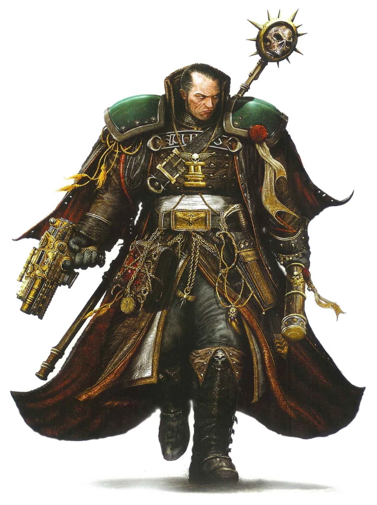

Mankind
Story
Age of Terra + Age of Technology (1 - 24 999 AD)
After conquering the milky way mankind developed the warp-drive that allowed humans to enter and exit the Warp making interstellar travel
possible. However only relatively short jumps were possible, since spaceships would get lost in the Warp at longer distances. This is when
humanity discovered, went to war with, defeated and made peace with aliens. Around this time, so called psykers
started appearing wielding
abilities, derived from the Warp, seen as magical. Soon, these psykers would have their minds corrupted by the very Warp they used for their
abilities.
Age of Strife (25 000 - 29 999 AD)
The man-made Artificial Intelligence controlled robots, some capable of devouring entire stars, turned against humanity causing a devistating
war only won with the help of alien species. After this incident, AI robots were replaced by so called Servitors
made from lobotomised
people to do mindless jobs. Around this time Warp Storms started appearing, obscuring planets or entire solar systems, making warp-jumps and
communication from and to these places impossible, for days, months, years or even millenias, further limiting humanity's ability to travel
great distances. One such storm covered Terra (Earth) cutting off humanity from it's home world for millenias, causing chaos. During this
time, Mars was won over by Adeptus Mechanicus against the maddened psykers.
Age of the Imperium (30 000 AD - Now [41st millenium])
After the stormed cleared from Terra, an immensly powerful man with equally powerful psykic abilities called the Emperor of Mankind foretold
the birth of Slaanesh, the fourth chaos god. In preparation for that, he started experimenting with human DNA and creating the primarchs
using his own DNA. With the birth of Slaanesh, the warp storms calmed down, regressing in their numbers. The Emperor had made an alliance
with the Adeptus Mechanicus and started the so called Great Crusade
to reunite humanity. In preparation for the great crusade, the Emperor
had created 20 18 primarchs, some of which were flawed. During the crusade, he worked on a secret project that would allow humanity to
use the Aeldari webways as a means to travel through the Warp. However, before he could finish it, he was interrupted by his favourite
(altough flawed) son, Horus and his blade. However, he did not die immediately, instead he was sat on the Golden Throne on Terra, which is
basically a life support system requiring 10 000 psykers' life force to function, 1 000 of which die every day. His wounds left him unable
to move or speak, but his mind stayed active in the Warp, creating a beacon that allows humanity to travel greater distances in the warp
without getting lost. Soon followed a civil war by Horus and the 9 primarchs corrupted by chaos, against the 9 loyal primarchs and their
armies of space marines that ended with Horus's death.
The now
With that, we reach today, the 41st millenium, where most of the loyal human factions think of the Emperor as a god and anyone who dare
oppose this is called a heretic and is executed or worse. Opposite of that, we have the chaos space marines worshipping the chaos gods or
being crazy.
Ability score bonuses
- Strength +1
- Constitution +2
Traits
- Imperial weapon proficiency: Proficiency with Imperial weapons
Classes
- Space Marines
- Adeptus Mechanicus
- Adeptus Custodes
- Inquisitors
- The Imperial Guard
- Sisters of Battle
- Chaos Marines
- Dark Mechanicum